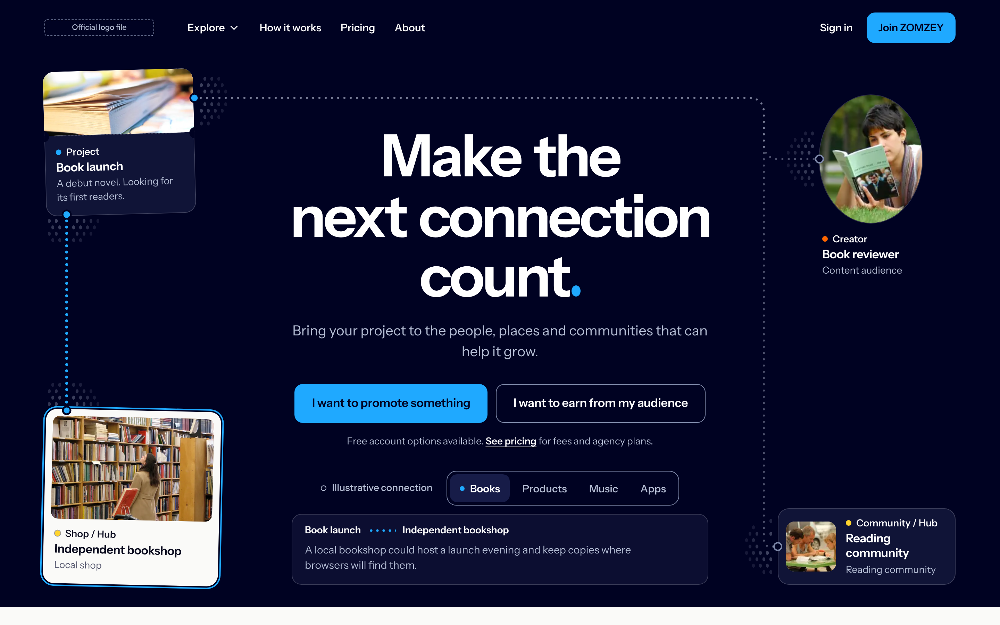
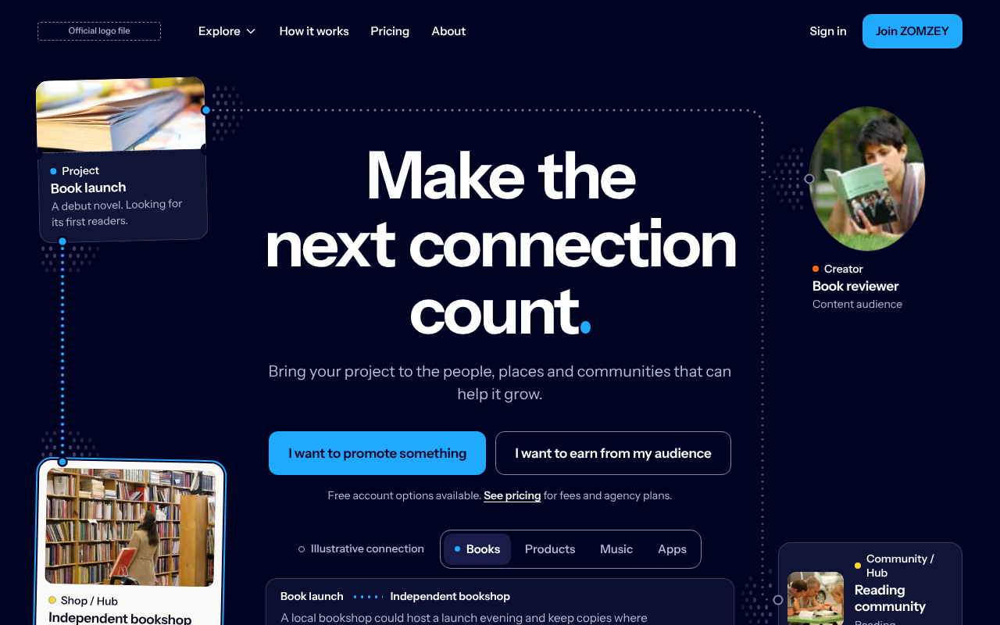
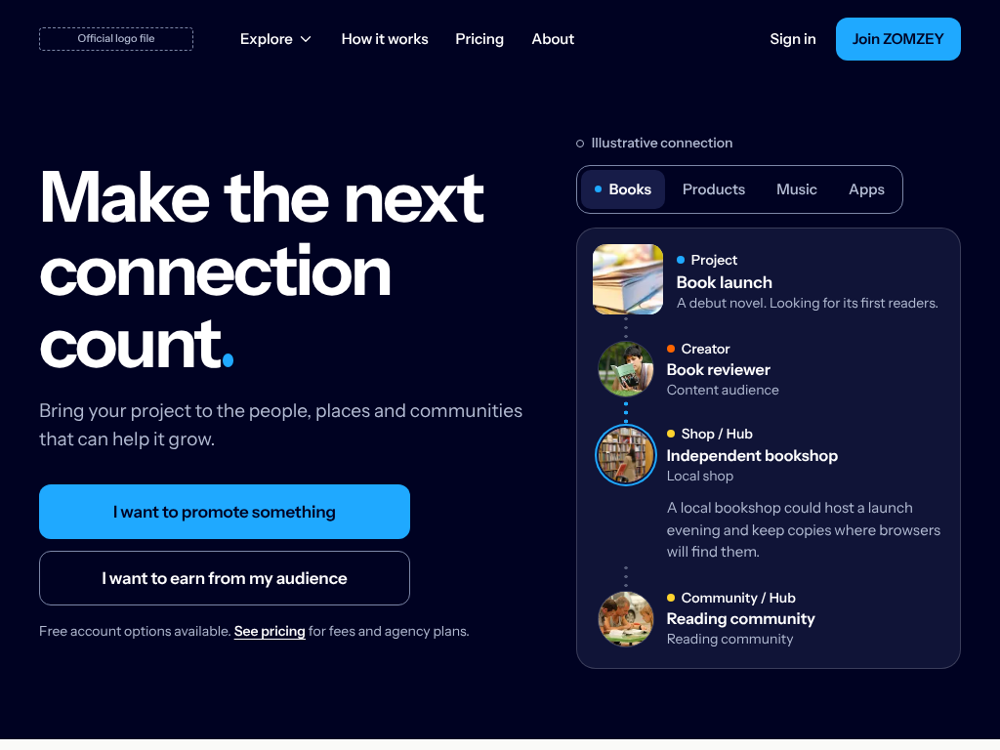
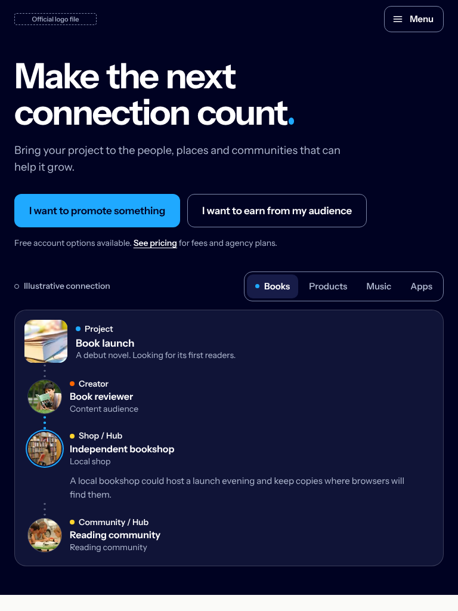
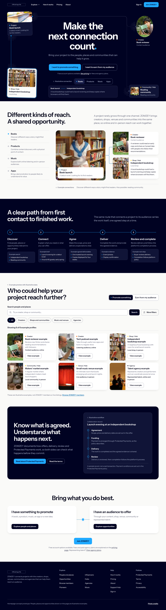

Message-safe centre
Headline, description and both intent actions sit in a reserved column. Routes run behind the cards.
Physical and digital reach
A reviewer, a bookshop and a reading group show reach beyond creators.
Labelled examples
Illustrative connection, example profiles and an illustrative workflow. No invented totals or testimonials.
Chapters, not cards
Opening, relationship stories, a transit-line process, a working explorer, a trust record and two closing routes.